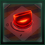
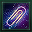
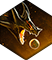
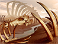
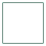
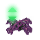
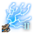
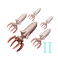
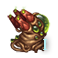
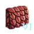

Ambition
Ambitions are alternative victory conditions and progression paths that are unlocked when an empire takes an ambition ascension perk. All ambition ascension perks will unlock the Ambition tab, where the ambition progression comes in 5 levels and grants various perks. The last level can only be unlocked by independent empires.
 Opinion penalties caused by ambitions only apply from empires that have at least
Opinion penalties caused by ambitions only apply from empires that have at least  Medium Intel on government unless the player reached the final level of the ambition.
Medium Intel on government unless the player reached the final level of the ambition.
Galactic Nemesis

|
|
Available only with the Nemesis DLC enabled. |
Empires that pick the  Galactic Nemesis ascension perk will be able to acquire Menace and complete expensive ambition Special Projects to progress through the ambition levels. It should be noted that only upon reaching the fifth ambition level is the empire treated as a crisis (Total War with every other empire). This means that through levels 1–4, the empire acts as normal, save for not being able to become the Custodian. Only level 5 ambition is the "point of no return", gated by the Special Project to level up, so to speak. This gives the ascension perk far more value for empires who don't want to take the final step, with its various bonuses.
Galactic Nemesis ascension perk will be able to acquire Menace and complete expensive ambition Special Projects to progress through the ambition levels. It should be noted that only upon reaching the fifth ambition level is the empire treated as a crisis (Total War with every other empire). This means that through levels 1–4, the empire acts as normal, save for not being able to become the Custodian. Only level 5 ambition is the "point of no return", gated by the Special Project to level up, so to speak. This gives the ascension perk far more value for empires who don't want to take the final step, with its various bonuses.
An AI empire that became a Galactic Nemesis will have their personality set to Crisis Aspirant.
Menace is gained by completing ambition objectives. The amount granted by each objective is reduced if the galaxy is larger or more populated with empires.
Once enough Menace and special projects are completed, the empire will gain a new ambition level.
| Ambition level | Required Menace | Ambition perk | Effects | Opinion | Special project cost |
|---|---|---|---|---|---|
| Concern | Undertaker |
|
|||
| Intimidation |
| ||||
| Menace Objectives | |||||
| Risk | 1000 | Menacing Corvette | |||
| Base Breaker | |||||
| Relentless Aggression | |||||
| Danger | 2000 | Menacing Destroyer | |||
| Death From Above |
| ||||
| Easily Replaced | |||||
| Misconfigured Thrusters |
| ||||
| Calamity | 5000 | Menacing Cruiser | |||
| Targeted Severing | |||||
| Flyswatter | |||||
| Existential Threat | 10000 | Star-Eater |
|
||
| Paid in Ambition | |||||
| Harsh Priorities | |||||
| Aetherophasic Engine |
|
Upon reaching Existential Threat level, the empire will gain control of the Aetherophasic Engine. Should it be fully upgraded, the entire galaxy will be destroyed and the Galactic Nemesis will be declared winner of the game. They will also be awarded the 
Cosmogenesis
|
|
Available only with the The Machine Age DLC enabled. |
Empires that pick the  Cosmogenesis ascension perk will be able to acquire
Cosmogenesis ascension perk will be able to acquire  Advanced Logic and research expensive technologies to progress through the ambition levels. Compared to a Galactic Nemesis empire, the character of a Cosmogenesis empire is more dangerously reckless than malicious, and the end goal is not the destruction of the galaxy, though the empire's experiments in tampering with the fabric of reality have far-reaching and often destructive consequences. Unlike Galactic Nemesis, reaching Existential Threat level does not lead to automatic Total War with the galaxy and it has smaller
Advanced Logic and research expensive technologies to progress through the ambition levels. Compared to a Galactic Nemesis empire, the character of a Cosmogenesis empire is more dangerously reckless than malicious, and the end goal is not the destruction of the galaxy, though the empire's experiments in tampering with the fabric of reality have far-reaching and often destructive consequences. Unlike Galactic Nemesis, reaching Existential Threat level does not lead to automatic Total War with the galaxy and it has smaller  Opinion penalties in comparison, meaning a Cosmogenesis faction can potentially remain at peace with the rest of the galaxy provided it uses diplomacy efficiently.
Opinion penalties in comparison, meaning a Cosmogenesis faction can potentially remain at peace with the rest of the galaxy provided it uses diplomacy efficiently.
If the  Enigmatic Engineering ascension perk is also taken, all Fallen Empire building research become available as random research option immediately.
Enigmatic Engineering ascension perk is also taken, all Fallen Empire building research become available as random research option immediately.
 Advanced Logic is gained by completing ambition objectives. The amount granted by each objective scales down with each empire present in the galaxy. Most of the hostility of this ambition is caused by Purging pops via the Synaptic Lathe; while this can be avoided, it will lead to much slower progression. Because of how Purging mechanics work, it is also possible to bypass the diplomatic penalties entirely by only using
Advanced Logic is gained by completing ambition objectives. The amount granted by each objective scales down with each empire present in the galaxy. Most of the hostility of this ambition is caused by Purging pops via the Synaptic Lathe; while this can be avoided, it will lead to much slower progression. Because of how Purging mechanics work, it is also possible to bypass the diplomatic penalties entirely by only using  Gestalt Consciousness pops in the Lathe.
Gestalt Consciousness pops in the Lathe.
| Objective | Description | |
|---|---|---|
| Control Science Nexuses (yearly) | 600 − (50 × number of empires) | Located far from any gravitational anomaly, this state-of-the-art research facility is used to ascertain unspoiled spacetime data.
|
| Employ Neural Chips (yearly) | The scale of our research is such that sacrifices must be made to accommodate it.
| |
| Research New Technologies | 100 − (10 × number of empires) | With every new technology, no matter how small, we gain insights in the inner workings of reality.
|
| Research Applied Infinity Theses | 8000 − (400 × number of empires) | Large-scape experiments to alter the rules that govern the behavior of reality will yield precious data.
|
| Secure Galactic Community Support (yearly) | 100 − (2.5 × number of empires) | Convincing the members of the Galactic Community that our research is essential would go a long way toward fulfilling our plans.
|
| 150 − (10 × number of empires) | Research-focused subjects can help us in our quest for absolute knowledge.
|
Once enough  Advanced Logic is obtained and technologies researched, the empire will gain a new ambition level.
Advanced Logic is obtained and technologies researched, the empire will gain a new ambition level.  Advanced Logic can also be gained by completing the Vultaum precursor chain.
Advanced Logic can also be gained by completing the Vultaum precursor chain.
| Ambition level | Required Advanced Logic | Ambition perk | Effects | Opinion | Required technology |
|---|---|---|---|---|---|
| Concern | Advanced Logic | ||||
| Wetware | Gain Scalable Reservoir Computing as a permanent research option | ||||
| Non-Baryonic Energy | Gain Dark Matter Power as a permanent research option | ||||
| Perfect Arcologies |
| ||||
| Risk | Gravitational Tools |
|
Exponential Learning Theory | ||
| Riddle Escort |
| ||||
| Antibaryonic Advances |
| ||||
| Advanced Harvesting |
| ||||
| Danger | Eternal Expansion |
|
Gravitic Brush | ||
| Enigma Battlecruiser |
| ||||
| Exotic Antibaryons |
| ||||
| Complex Infrastructures |
| ||||
| Calamity | Rulebreaker |
|
Theoretical Infinity Thesis | ||
| Paradox Titan |
| ||||
| Armor and Armaments |
| ||||
| Golden Age |
| ||||
| Existential Threat | Void Voyager | ||||
| Nanoswarms |
| ||||
| Memory and Creation |
|
If the Keepers of Knowledge are present in the galaxy, a week after an empire reaches the third ambition level, the Fallen Empire will ask it to accept a modifier of −85%  Research Speed and
Research Speed and  Advanced Logic from Jobs for 5 years or lose −75
Advanced Logic from Jobs for 5 years or lose −75  Opinion with the Keepers of Knowledge. The first time the empire researches the Applied Infinity Thesis technology, the Keepers of Knowledge will give the following choice:
Opinion with the Keepers of Knowledge. The first time the empire researches the Applied Infinity Thesis technology, the Keepers of Knowledge will give the following choice:
- Accept a modifier of −85%
 Research Speed and
Research Speed and  Advanced Logic from Jobs for 30 years.
Advanced Logic from Jobs for 30 years. - Go to war with the Keepers of Knowledge.
- Lose the ability to build Fallen Empire buildings or ships, research the Applied Infinity Thesis technology, or reach the last two ambition levels. If the empire has a
 Synaptic Lathe it is destroyed. All
Synaptic Lathe it is destroyed. All  Opinion penalties from researched Fallen Empire technologies will be removed.
Opinion penalties from researched Fallen Empire technologies will be removed.
In addition, each time the technology is researched, there is a 1% chance to trigger a Guardians of the Galaxy awakening.

After reaching the final ambition level, the empire must research the extremely expensive Nascent Universes technology and then construct the equally expensive Horizon Needle. The Horizon Needle is a ship but it is constructed like a megastructure. The construction takes 2400 days and is done in orbit of the capital. The ship is very resilient and has a Jump Drive regardless of whether the empire researched it or not, but has no weapons. Once completed, it needs to be ordered to embark the population of every colony, which will decolonize the former colony. Once every colony has been embarked, the Horizon Needle must embark the population of the empire capital. Unlike colonies, the capital will not be decolonized once the population is embarked and will retain 2000  Pops, but the empires cannot colonize new worlds. Finally, the Horizon Needle must either be ordered to dive into a black hole or complete a special project to dive into the supermassive black hole at the center of the galaxy, the latter requiring the Horizon Needle to remain at the capital for a year. Regardless of what option is taken, the game is won upon completion.
Pops, but the empires cannot colonize new worlds. Finally, the Horizon Needle must either be ordered to dive into a black hole or complete a special project to dive into the supermassive black hole at the center of the galaxy, the latter requiring the Horizon Needle to remain at the capital for a year. Regardless of what option is taken, the game is won upon completion.
There are multiple endings for Cosmogenesis depending on whether the special project was used or which black hole was plunged into.
- Sending the Horizon Needle into any normal black hole not connected to any events leads to the default ending.
- Diving into the supermassive black hole at the center of the galaxy leads to a separate ending. It is slightly altered if the empire formed a Covenant with a Shroud entity. If the empire has the
 Knights of the Toxic God origin, the
Knights of the Toxic God origin, the  End of the Cycle will no longer appear for empires who delve into the Shroud.
End of the Cycle will no longer appear for empires who delve into the Shroud. - The following black holes have unique endings: Great Wound, Gargantua, Pantagruel, Terminal Egress, the black holes where the Dimensional Horror or The Elder One emerge, the black hole where the Horizon Signal event chain started and the black hole created by The Worm.
- Empires with
 Obsessional Directive have a different ending regardless of the chosen black hole as long as they never missed their quota and have not gone for the galactic core black hole. This ending awards the
Obsessional Directive have a different ending regardless of the chosen black hole as long as they never missed their quota and have not gone for the galactic core black hole. This ending awards the 
A Universe of Paperclips achievement.
Post-Cosmogenesis galaxy
The Cosmogenesis ending will make the empire unplayable and bring the option to switch to another empire if any exists.
The Cosmogenesis empire will become a Fallen Empire. Its personality will depend on empire ethics. It will retain all subjects and if it is part of a federation, it will remain as a member. If it had a Synaptic Lathe, the megastructure is destroyed. If the empire was a  Hive Mind, it will possess unique civics not found in conventional Fallen Empires and its capital will become a
Hive Mind, it will possess unique civics not found in conventional Fallen Empires and its capital will become a  Hive World. The new Fallen Empire will resettle all habitable planets and megastructures within its core sector, filling them with Fallen Empire buildings, and have a Citadel in every system; however, all territory outside the core sector will be lost.
Hive World. The new Fallen Empire will resettle all habitable planets and megastructures within its core sector, filling them with Fallen Empire buildings, and have a Citadel in every system; however, all territory outside the core sector will be lost.
The following effect will occur upon a Cosmogenesis victory across the entire galaxy:
- 9% of all systems will be destroyed.
- 50% of all starbases will be destroyed.
- 30% of all fleets will be destroyed.
- 80% of the systems will gain random deposits.
Every surviving non-capital planet will be radically changed in the following way:
- 5% chance the planet becomes a Shattered World.
- 5% chance the planet becomes a Black Hole.
- 20% chance the colony is destroyed and the planet gains +200%
 Colony Development Speed,
Colony Development Speed,  Pop Growth Speed and
Pop Growth Speed and  Mechanical Pop Assembly Speed and +75%
Mechanical Pop Assembly Speed and +75%  Planetary Build Speed for 10 years.
Planetary Build Speed for 10 years. - 21% chance the colony gains 85
 Devastation, −100% Pop Growth Speed and Mechanical Pop Assembly Speed and −200% Planetary Build Speed for 10 years.
Devastation, −100% Pop Growth Speed and Mechanical Pop Assembly Speed and −200% Planetary Build Speed for 10 years. - 21% chance the colony loses 1300
 Pops and gains 8 blockers.
Pops and gains 8 blockers. - 21% chance the colony loses 2000 Pops and gains 6 blockers.
- 7% chance the colony gains +200% Colony Development Speed, Pop Growth Speed and Mechanical Pop Assembly Speed and +75% Planetary Build Speed for 10 years.
Every empire will gain +20%  Pop Amenities Usage, −20%
Pop Amenities Usage, −20%  Happiness and −20
Happiness and −20  Stability for 5 years.
Stability for 5 years.
For 30 days, the date will not display properly.
It is possible to release a sector as a subject before completing the exodus, which will allow the player to continue playing as the released empire. The subject empire will keep its planets, pops, and technologies, including the Cosmogenesis technologies.
Behemoth Fury
|
|
Available only with the BioGenesis DLC enabled. |
Empires that pick the  Opinion penalties until the final ambition level is reached.
Opinion penalties until the final ambition level is reached.
The first time the empire loses a Behemoth, it will also gain 1500 Feral Insight.
Once enough Feral Insight has been acquired and the required objectives are completed, the empire will gain a new ambition level.
| Ambition level | Required Feral Insight | Ambition perk | Effects | Required objective |
|---|---|---|---|---|
| Concern | Feral Insight |
|||
| Cyclopean Hatcheries | ||||
| Accelerated Field Trials |
| |||
| Supersized Crops | ||||
| Risk | 2000 | Gargantuan Brood |
Build a Behemoth Egg megastructure | |
| Better Glandular Stimulation |
| |||
| Transversal Enquiries |
| |||
| Nutrient Overload |
| |||
| Danger | 6000 | Harder Chitin |
|
Hatch a Behemoth |
| Faster Growth Cycles |
| |||
| Bio-Engineering Mastery |
| |||
| Calamity | 18000 | Unbridled Growth |
Finish the Brain Link Trials special project ( | |
| Stronger Organisms | ||||
| Behemoth Mutations | ||||
| Existential Threat | 45000 | Mind Meld |
Finish the The Mind Meld special project ( | |
| Primal Roar |
| |||
| Ever Hungry |
| |||
| Ravenous Progeny |
|
To win the game, the Behemoth Fury empire must finish the Growing Pains situation and then defeat the Elder Voidspawn guardian and any existing Class IV Behemoths controlled by other empires. Should they achieve these objectives, they will win the game at the beginning of the next year, awarded with the King of Monsters achievement. All planets will be depopulated, all starbases and stations will be removed, and a final choice will appear.
- Choosing to leave the galaxy will result in all fleets disappearing.
- Choosing to stay will cause all fleets to follow the Class IV Behemoth, who will become even more powerful and roam the galaxy. The Class IV Behemoth will be hostile towards all empires except former subjects of the ambition empire. If the empire had any Behemoth Egg or Chrysalis, they will hatch in 10 years. Class I and Class II Behemoths will grow in size every 10 years as well.
- If the empire has communicated with the Prethoryn Scourge, a third option will be given to confront the Hunters, which will result in all fleets disappearing. Two years later, all empires in the galaxy will have the option to issue a special project to find out where the Class IV Behemoth went. The special project costs 600000
 Physics and its outcome is purely narrative, although empires with the
Physics and its outcome is purely narrative, although empires with the  Cosmogenesis ascension perk will gain 1000 Advanced Logic.
Cosmogenesis ascension perk will gain 1000 Advanced Logic.
Behemoths
The Behemoth Fury ambition path grants access to Behemoths, which are hatched from Behemoth Egg megastructures. Behemoths come in four classes depending on their size and cannot be merged with fleets or disbanded.
Behemoths are fed by destroying bioships, space fauna, guardians or other Behemoths or by bombarding planets. Each time a Behemoth gains 1 Growth, the empire will gain 500  Food. Guardians will always give 40 Growth. Once a Behemoth has fed sufficiently, they can be ordered to grow up in any owned system, which will create a Behemoth Chrysalis megastructure.
Food. Guardians will always give 40 Growth. Once a Behemoth has fed sufficiently, they can be ordered to grow up in any owned system, which will create a Behemoth Chrysalis megastructure.
When a Behemoth bombards a planet, it will slowly gain Growth and spawn hostile armies. If the armies defeat the defenders, all pops are instantly purged and the Behemoth gains 1 Growth for every 100 pops. The world will also gain the  Devastated Settlements,
Devastated Settlements,  Devoured Biosphere and
Devoured Biosphere and
If Behemoths are not fed for 2 years, they have a 75% chance to become enraged, guaranteed if the empire has the Behemoth Mutations: Cybernetics modifier. This check will happen again in 1-3 years. They can also be enraged manually via a fleet action for the cost of 15000  Food and 150
Food and 150  Exotic Gases and a cooldown of 540 days. Enraged Behemoths are hostile towards everyone, attack all ships in the system and then head for the closest colony or Behemoth Egg to destroy. It will then wait. Enraged lasts 180 days out of combat or until the Behemoth is defeated by an empire with the Behemoth Fury ascension perk. Destroying an egg gives the Behemoth 50 Growth. Each time an enraged Behemoth enters another empire's borders, it gives a permanent −50
Exotic Gases and a cooldown of 540 days. Enraged Behemoths are hostile towards everyone, attack all ships in the system and then head for the closest colony or Behemoth Egg to destroy. It will then wait. Enraged lasts 180 days out of combat or until the Behemoth is defeated by an empire with the Behemoth Fury ascension perk. Destroying an egg gives the Behemoth 50 Growth. Each time an enraged Behemoth enters another empire's borders, it gives a permanent −50  Opinion and each time it attacks one of their colonies or Behemoth Eggs, it gives a permanent −500
Opinion and each time it attacks one of their colonies or Behemoth Eggs, it gives a permanent −500  Opinion. If two Behemoths controlled by the same player are in the same system, one of them will become enraged but will not attack the closest colony or Behemoth Egg if it wins.
Opinion. If two Behemoths controlled by the same player are in the same system, one of them will become enraged but will not attack the closest colony or Behemoth Egg if it wins.
Devouring a planet with a Class III or IV Behemoth has the same diplomatic penalties as using a World Cracker.
The Class IV Behemoth is grown from a Class III Behemoth that completes the The Mind Meld special project. It has the ability to lay eggs and is upgraded at each stage of the Growing Pains situation. If a Class IV Behemoth is killed, its empire is instantly destroyed.
| Behemoth | Components | Growth required | ||||||
|---|---|---|---|---|---|---|---|---|
| Class I | 175000 | 100000 | 60% | 100% | −50% | −250 |
      |
150 |
| Class II | 437500 | 437500 | 40% | 150% | −75% | −500 | 300 | |
| Class III | 1000000 | 1000000 | 25% | 200% | −100% | −1000 | The Mind Meld special project | |
| Class IV | 1000000 | 1000000 | 35% | 300% | −500% | −2500 | Cannot grow |
Empire with the  Reanimators or
Reanimators or  Permanent Employment that kill a Behemoth cannot reanimate it, but will gain 10000
Permanent Employment that kill a Behemoth cannot reanimate it, but will gain 10000  Food and a scaled amount of
Food and a scaled amount of  Unity and
Unity and  Society Research. If the empire is also Spiritualist, the
Society Research. If the empire is also Spiritualist, the  Unity reward will be even larger.
Unity reward will be even larger.
Galactic Hyperthermia
|
|
Available only with the Infernals DLC enabled. |
Empires that pick the  Galactic Hyperthermia ascension perk will be able to acquire Crystallized Entropy. An AI empire that goes through this ambition will have their personality shift to Thermarchy.
Galactic Hyperthermia ascension perk will be able to acquire Crystallized Entropy. An AI empire that goes through this ambition will have their personality shift to Thermarchy.
Once enough Crystallized Entropy has been acquired and the required objectives are completed, the empire will gain a new ambition level. Unlike other player crises, unlocking the first level requires completing a special project too and every subsequent level requires the empire to be independent. Empires with the  Red Giant origin who finish the Red Giant Expansion situation one way or another will not receive or have to complete the first special project. Conquering a Galactic Crucible from another empire will not make progress towards increasing the ambition level.
Red Giant origin who finish the Red Giant Expansion situation one way or another will not receive or have to complete the first special project. Conquering a Galactic Crucible from another empire will not make progress towards increasing the ambition level.
| Ambition level | Ambition perk | Effects | Opinion | Required objective |
|---|---|---|---|---|
| Concern | Crystallized Entropy |
|
Finish the New Power Source special project ( | |
| Entropy Harnessing | ||||
| Galactic Crucible | ||||
| Risk | Radiant Ambitions |
Upgrade the Galactic Crucible megastructure to level 2 | ||
| Concentrated Entropy | ||||
| Forced Ignition | ||||
| Danger | Ember Cruiser |
Upgrade the Galactic Crucible megastructure to level 3 | ||
| Coronal Venting |
| |||
| Engulfing Flames |
| |||
| Calamity | Heliofusion Reactors |
Upgrade the Galactic Crucible megastructure to level 4 | ||
| Artificial Solarflare |
| |||
| Blazing Armada |
| |||
| Existential Threat | Ember Battleship |
|
Upgrade the Galactic Crucible megastructure to level 5 | |
| Critical Mass |
| |||
| Infused Ammunition |
After upgrading the Galactic Crucible megastructure to level 2, it will be able to build Conduits, equal to the number of owned systems, as well as replace any lost Conduit. Whether the megastructure will do so as well as how fast depends on its Overclocking mode. Conduits are ships equipped with a Lensed Paralyzer weapon, which prevents any target from moving or attacking for 7 days. In addition, Conduits have the ability to turn non-blackhole stars into Class M stars. The process takes 6 months and afterwards the Conduit will no longer be able to move but can still be disbanded and the Galactic Crucible will replace them. Owned colonies in systems with a Conduit gain +5%  Amenities, +5%
Amenities, +5%  Resources from Jobs and +20%
Resources from Jobs and +20%  Unity from Jobs. Conduits will automatically travel to an owned system and transform the star but before the process is complete they can be manually ordered to travel to another system. Stars that are terraformed will have their
Unity from Jobs. Conduits will automatically travel to an owned system and transform the star but before the process is complete they can be manually ordered to travel to another system. Stars that are terraformed will have their  Energy deposit increased by a random amount but existing Class M stars with a Conduit will not. Conduits will not terraform stars that power a Dyson Swarm, Dyson Sphere or Quantum Catapult.
Energy deposit increased by a random amount but existing Class M stars with a Conduit will not. Conduits will not terraform stars that power a Dyson Swarm, Dyson Sphere or Quantum Catapult.
After upgrading the Galactic Crucible megastructure to level 3, the empire will have to choose between two special projects: Designated Firestorm and Unforeseen Correlation.
- Designated Firestorm costs 25000
 Engineering Research, allows the Galactic Crucible megastructure to be upgraded to Galactic Crucible Hub and reach the last two ambition levels, and spawns 6 empty systems around the galactic core.
Engineering Research, allows the Galactic Crucible megastructure to be upgraded to Galactic Crucible Hub and reach the last two ambition levels, and spawns 6 empty systems around the galactic core. - Unforeseen Correlation costs 25000 Physics Research and allows the Galactic Crucible megastructure to be upgraded to Galactic Crucible Institute but prevents reaching the last two ambition levels.
After upgrading the Galactic Crucible megastructure to level 5, a wormhole will appear in the system with the Galactic Crucible that connects to 3 of the 6 systems that were spawned the galactic core. After 4 years, the other 3 systems will be connected to the rest of the galaxy by hyperlanes. The Mobilization situation will also start when the megastructure is fully upgraded. When the Mobilization situation ends, every empire in the galaxy that is not Genocidal or player crisis will receive the option to declare war on the ambition empire. In addition, if the Galactic Community or Galactic Imperium exist, a Declare Crisis resolution is instantly passed against the crisis empire and if the empire was part of the Galactic Community or Galactic Imperium, it will be removed from it. After the Mobilization situation ends, the Galactic Firestorm situation starts for every empire in the galaxy. If more than 3 of the 6 systems around the galactic core have a Conduit present, the situation will make progress at a rate of 3 each month. If less than 3 of the 6 systems around the galactic core have a Conduit present, the situation will lose progress at a rate of 3 each month. The situation will only end if the ambition empire either succeeds or is destroyed.
Depending on game difficulty, when the Mobilization situation ends, Fallen Empires may declare war on the ambition empire if they exist. This applies regardless of whether the ambition empire is a human player or AI empire. One Fallen Empire will declare war on Captain, 2 on Commodore, 4 on Admiral and all 6 on Grand Admiral. One of them may also awaken. If the Shattered Fragments are present, they will not become involved unless they have awakened.
If the Galactic Firestorm situation progresses completely, the ambition empire will win the game, receive the Crystallized Singularity relic and the Galactic Firestorm achievement, and if its founder species has the  Organic trait, it is replaced by
Organic trait, it is replaced by  Thermophile. Every star in the galaxy except Black Holes will become a Class M Red Giant, every planet that is not an
Thermophile. Every star in the galaxy except Black Holes will become a Class M Red Giant, every planet that is not an  Ecumenopolis will be terraformed into a
Ecumenopolis will be terraformed into a  Volcanic World, every empire that does not have the
Volcanic World, every empire that does not have the  Galactic Hyperthermia ascension perk or a founder species with the
Galactic Hyperthermia ascension perk or a founder species with the  Thermophile trait is destroyed, and every empire with a founder species with the
Thermophile trait is destroyed, and every empire with a founder species with the  Thermophile trait will receive 350-1000000
Thermophile trait will receive 350-1000000  Unity. If the Contingency crisis is taking place, it will be destroyed.
Unity. If the Contingency crisis is taking place, it will be destroyed.
Empires whose founder species do not have the  Thermophile trait will receive a special project 3 months after reaching ambition level 2. The special project costs 2500
Thermophile trait will receive a special project 3 months after reaching ambition level 2. The special project costs 2500  Society Research and completing it increases
Society Research and completing it increases  Habitability on
Habitability on  Volcanic Worlds by +50%.
Volcanic Worlds by +50%.
Defender of the Galaxy
|
|
Available only with the Nomads DLC enabled. |
Empires that pick the  Defender of the Galaxy ascension perk will be able to acquire Valor. Unlike other ambitions, Defender of the Galaxy causes
Defender of the Galaxy ascension perk will be able to acquire Valor. Unlike other ambitions, Defender of the Galaxy causes  Opinion bonuses instead of penalties.
Opinion bonuses instead of penalties.
Once enough Valor has been acquired and the required objectives are completed, the empire will gain a new ambition level.


{kind=link}
{kind=link}
{kind=link}
{kind=link}
{kind=link}
{kind=link}
{kind=link}
{kind=link}
{kind=link}
{kind=link}
{kind=link}
{kind=link}
{kind=link}
{kind=link}
{kind=link}
{kind=link}
{kind=link}
{kind=link}
{kind=link}
{kind=link}
{kind=link}
{kind=link}
{kind=link}
{kind=link}
{kind=link}
{kind=link}
{kind=link}
{kind=link}
{kind=link}
{kind=link}
{kind=link}
{kind=link}
{kind=link}
{kind=link}
{kind=link}
{kind=link}
{kind=link}
{kind=link}
{kind=link}
{kind=link}
{kind=link}
{kind=link}
{kind=link}
{kind=link}
{kind=link}
{kind=link}
{kind=link}
{kind=link}
{kind=link}
{kind=link}
{kind=link}
{kind=link}
{kind=link}
{kind=link}
{kind=link}
{kind=link}
{kind=link}
{kind=link}
{kind=link}
{kind=link}
{kind=link}
{kind=link}
{kind=link}
{kind=link}
{kind=link}
{kind=link}
{kind=link}
{kind=link}
{kind=link}
{kind=link}
{kind=link}
{kind=link}
{kind=link}
{kind=link}
{kind=link}
{kind=link}
{kind=link}
{kind=link}
{kind=link}
{kind=link}
{kind=link}
{kind=link}
{kind=link}
{kind=link}
{kind=link}
{kind=link}
{kind=link}
{kind=link}
{kind=link}
{kind=link}
{kind=link}
{kind=link}
{kind=link}
{kind=link}
{kind=link}
{kind=link}
{kind=link}
{kind=link}
{kind=link}
{kind=link}
{kind=link}
{kind=link}
{kind=link}
{kind=link}
{kind=link}
{kind=link}
{kind=link}
{kind=link}
{kind=link}
{kind=link}
{kind=link}
{kind=link}
{kind=link}
{kind=link}
{kind=link}
{kind=link}
{kind=link}
{kind=link}
{kind=link}
{kind=link}
{kind=link}
{kind=link}
{kind=link}
{kind=link}
{kind=link}
{kind=link}
{kind=link}
{kind=link}
{kind=link}
{kind=link}
{kind=link}
{kind=link}
{kind=link}
{kind=link}
{kind=link}
{kind=link}
{kind=link}
{kind=link}
{kind=link}
{kind=link}
{kind=link}
{kind=link}
{kind=link}
{kind=link}
{kind=link}
{kind=link}
{kind=link}
{kind=link}
{kind=link}
{kind=link}
{kind=link}
{kind=link}
{kind=link}
The Take the Initiative special project costs 25000  Physics. Finishing it starts the endgame crisis, and if two endgame crises did not already happen, unlocks the Press the Advantage special project. The Press the Advantage special project costs 30000
Physics. Finishing it starts the endgame crisis, and if two endgame crises did not already happen, unlocks the Press the Advantage special project. The Press the Advantage special project costs 30000  Physics. Finishing it starts another endgame crisis. These special project will appear and work even if endgame crises were turned off at galaxy settings.
Physics. Finishing it starts another endgame crisis. These special project will appear and work even if endgame crises were turned off at galaxy settings.
To win the game, the ambition empire must defeat two endgame crises and then pass the  End Custodianship resolution. If the empire is
End Custodianship resolution. If the empire is  Nomadic through the entire playthrough and has defeated all endgame crises upon passing the resolution, it will be awarded the Defenders of the Galaxy achievement.
Nomadic through the entire playthrough and has defeated all endgame crises upon passing the resolution, it will be awarded the Defenders of the Galaxy achievement.
References
| Exploration | Exploration • FTL • Unique systems • L-Cluster • Pre-FTL species • Fallen empire • Spaceborne aliens • Enclaves • Guardians • Marauders • Caravaneers |
| Celestial bodies | Celestial body • Colonization • Planetary features • Planet modifiers |
| Discovery | Discovery • Anomaly • Archaeological site • Astral rift • Relics • Collection |
| Species | Species • Pop modification • Biological traits • Machine traits • Population • Species rights • Ethics |
| Leaders | Leader • Common leader traits • Commander traits • Official traits • Scientist traits • Paragons |
| Governance | Empire • Origin • Government • Civics • Council • Policies • Edicts • Factions • Traditions • Ascension perks • Ambition • Situations |
| Economy | Resources • Planetary management • Districts • Jobs • Designation • Trade • Megastructures • Waystation |
| Buildings | Planet capital • Common buildings • Planet unique • Empire unique • Holdings |
| Ships | Ship • Arkship • Ship designer • Core components • Weapon components • Utility components • Mutations • Offensive mutations |
| Technology | Technology • Physics research • Society research • Engineering research |
| Diplomacy | Diplomacy • Relations • Galactic community • Federations • Subject empires • Intelligence • Contracts • AI personalities |
| Warfare | Warfare • Space warfare • Land warfare • Starbase • Crisis |
| Others | Events • The Shroud • Preset empires • AI players • Stat modifiers • Console commands • Easter eggs |